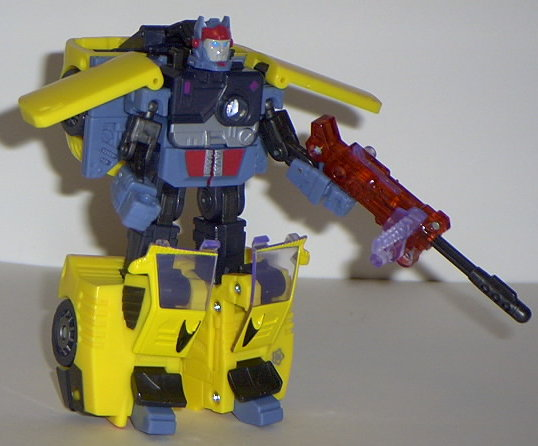
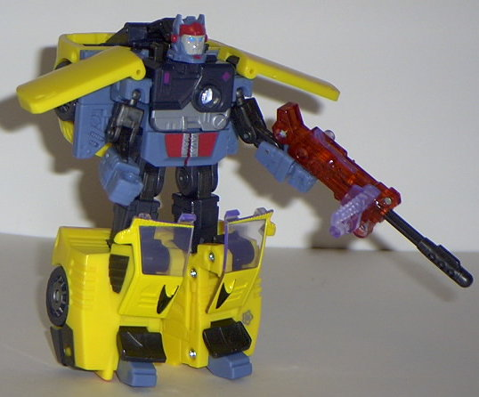
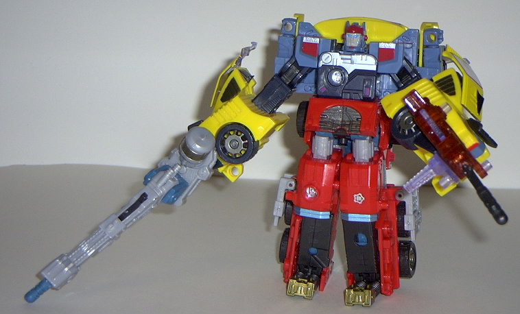
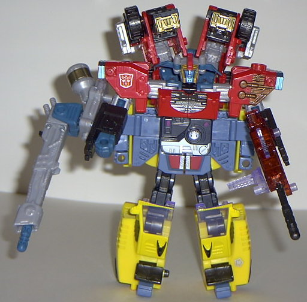

Vehicle mode is a sportscar.
Like
Armada Hot Shot
, Energon Hot Shot has
a primarily yellow color scheme in his car mode, which I suppose is appropriate.
However, UNlike his predecessor, Energon Hot Shot's shade of yellow is
a bit less bright and a bit less obnoxious, making it much more acceptable
of a main color. It's not my first choice, but it's not bad. The paint
detailing is nice, with enough paint apps on the top and sides of the car
to break up the yellow effectively. There's a bit of a lack of mold detailing,
but this mode also doesn't look as preschoolish as Armada Hot Shot's did-
there's realistic tires given to him this time, and he has see-through
windows and clear headlights. You can see the robot chest through the clear
windows, but it's not like it's something as blatant as a head or anything.
(However, the main bulk of the car is rather large proportionally when
you compare it to the hood height.) If you open up his hood, there's also
an engine with an Autobot symbol inside- a very nice detail, even if the
movement is required for the transformation. You can also open up the car
doors individually. Hot Shot's gun and...er... radar thingie don't fit
very snugly in their holes on the sides of his roof, though, so be a bit
careful there. (The gun itself is a standard missile-firing gun, nothing
special. One Minicon port on one side, one Powerlinx port on the other.)
Hot Shot's silver Powerlinx symbol is on the right top side of the car,
near the back.
Hot Shot's robot mode
is also rather good, although it does have some problems. For once, the
arms are really puny when compared to the legs. The chest is also rather
small. The head itself doesn't look TOO bad, just... rather odd and docile.
Not like Hot Shot. In fact, if it wasn't for the painted-on racing helmet
on the forehead, I'd think it was another character. I'm also not too fond
of the face that he has a long plastic arm connecting his head to his back-
it looks rather weird. The lower legs are a bit big, but I wouldn't mind
this if Hot Shot's legs didn't look so stiff- he has three points of articulation
at the hips, but none at the knees, which is rather odd. (As for the rest
of the articulation, he has shoulder and knee articulation, the latter
at two points. Not particularly impressive, although he's certainly not
a brick.) The color scheme is pretty good in this mode, however, as there's
quite a bit less yellow. The front third of the car hangs off his back,
but it tucks away very nicely, and doesn't particularly get in the way.
I also like how his car doors act as shoulder pads- it gives the robot
mode some nice individuality. The mold detailing is also a bit in this
mode, with lots of good robotic details on his chest, although his arms
and legs could still use a little work. I'm also fond of the way the hood
panels make good kneecaps. Hot Shot's Autobot spark crystal is, obviously,
on his chest in this mode.


As a Powerlinx robot,
Hot Shot makes a somewhat good top half when compared to the other Powerlinxing
Autobots. His lower hands may be rather bulky, but he has good movement
at the elbows here, and his robot mode hands tuck away somewhat nicely
(although I would have preferred if the car doors were on top of them rather
than underneath). I'd also have liked some real hands, instead of just
ones that were molded into the side of the car.
As a bottom half, Hot
Shot is essentially just his regular robot mode with his hands and head
tucked away. Still, that's not necessary a bad thing, especially with Hot
Shot's big feet. The extras tuck away similar to how they do when Hot Shot
is the top half, which means they're relatively out of the way when it
comes to movement. However, they stick out from the sides this time, making
the Powerlinx robot look rather fat from a head-on perspective.
Although he's not in the "must-buy" category, Energon Hot Shot is a sizable step above Armada Hot Shot, that's for sure. He's also rather good for a deluxe Autobot- excellent vehicle mode, decent robot mode, and does alright in his Powerlinx modes when compared to other Autobot combiners. Recommended.
Review by Beastbot